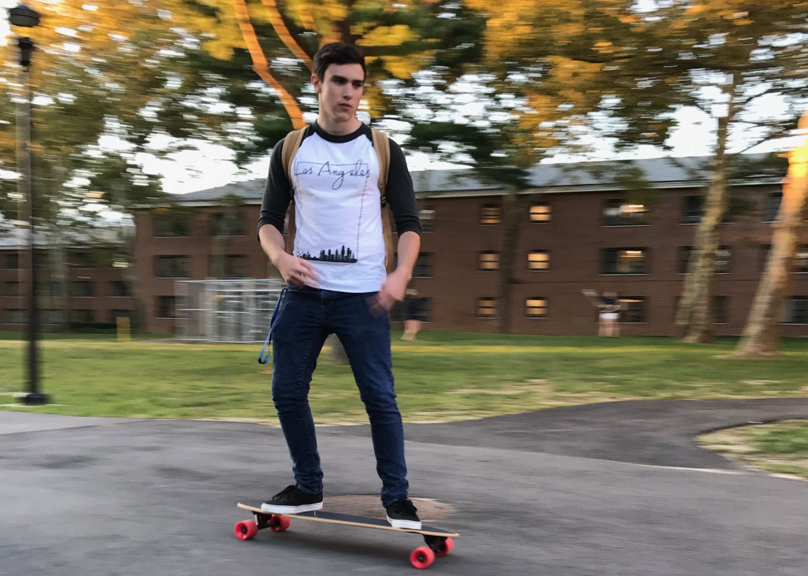

Freerunning is a discipline of navigating an urban environment in a creative manner.
In addition to having many original movements, it borrows many movements from gymnastics, capoeira, martial arts tricking, as well as parkour.
I have been training freerunning for the past eight years, and it is one the hobbies I am most passionate about.
The friends I have made from this discipline are easily some of the closest relationships I have.
Bouldering
Bouldering is a form of rock climbing in which you climb shorter, yet more challenging, routes without using any equipment.
I frequent a climbing gym around an hour from my house every once in a while to climb.
It helps keep me physically strong, and the problem solving of working out a specific climb can be a great mental challenge.
Cubing
Cubing is the name given to the solving of three dimensional puzzles. I started cubing back in high school after my friends started learning.
Since then my collection of puzzles has grown quite large. I've managed to solve the original rubiks cube in 11 seconds,
as well as being able to solve it in a handstand.
Longboarding

Longboarding is a type of skating in which you use a longer board that is meant more for riding around instead of doing tricks.
I find it enjoyable to either skate through trails in nature or just around campus. I also enjoy taking a lot of photos near places while I ride.
Photography
I love to take photos of landscapes and buildings, as well as portrait shots of people.